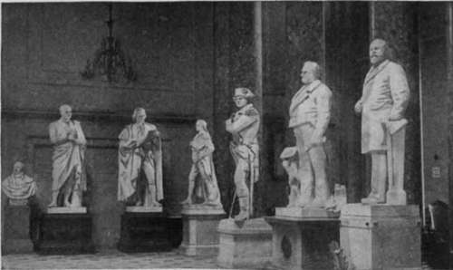
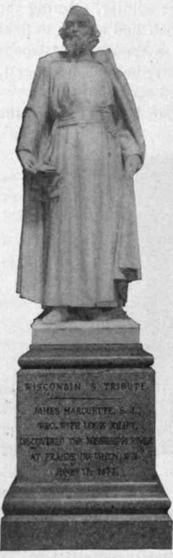

Statuary
Description
This section is from the book "The National Capitol. Its Architecture Art And History", by George C. Hazelton, Jr. Also available from Amazon: The National Capitol Its Architecture Art and History.
Statuary
This old Hall of Representatives was set apart as a National Hall of Statuary by a provision of the sundry civil bill of July 2, 1864, pursuant to a resolution offered by Mr. Morrill of Vermont. The President, at the same time, was given authority to invite each State to contribute for its adornment two statues in bronze or marble, of deceased citizens of the State, whom, "for their historic renown or from civic or military services," she should consider worthy of such national commemoration. At present, only thirteen States have responded to this call.
In the southeast corner stand the contributions of the State of Connecticut, Roger Sherman and Jonathan Trumbull, by the same sculptor, C. B. Ives. Trumbull was Governor of the Colony and first Governor of the State. Washington, who "relied on him as one of his main pillars of support," called him " Brother Jonathan," and from this has come the nickname of the United States. The next in the circle, John P. Muhlenberg-, by Blanche Nevin, is from Pennsylvania. On the Sunday following the news of the battle of Lexington, he preached a sermon which will live in the memory of man as long as history is read. The congregation was startled by its dramatic climax, excusable because of its sincere patriotism. Throwing off the robes of the minister, he stepped forth in the uniform of the soldier, uttering the words : " There is a time for all things—a time to preach and a time to fight —and now is the time to fight." He then organized a company of troops from among his congregation, joined Washington's army, became a general, and was present at the surrender of Lord Cornwallis at Yorktown.
* For report, see Appendix, p. 268.
From Vermont comes a statue, by Larkin C. Mead, of Ethan Allen, the hero of Ticonderoga, who demanded its surrender "in the name of the great Jehovah and the Continental Congress." Michigan sends one statue, of Lewis Cass, the work of the eminent sculptor, Daniel C. French, whose "Minute Man" at Concord, Massachusetts, is universally admired. The artist had an admirable subject for a statue in this sturdy son of Michigan. The rugged lines of his face, which reveal his strength of character and Spartan raising, lend themselves to the chisel's nicest art. In looking at the statue, one feels the force and reality of the man who, when Hull ignomini-ously surrendered at Detroit, then a young colonel, broke his sword across his knee, exclaiming : " The British never shall have it! "
From the State of Ohio comes James Abram Garfield and ('.overnor William Allen, both by Niehaus. Jacob Collamer, Senator from Vermont, is the work of Preston Powers. Robert Fulton, by Howard Roberts, is the gift of Pennsylvania. His Clermont, the first successful steamboat, left New York for Albany August 7, 1807. This picturesque statue attracts universal attention, but deserves little recognition from critics, otherwise than for its graceful and idea-possessing pose. The face is characterless. The statues which follow, of General Nathaniel <ireene of Revolutionary fame, the corner-stone of whose monument in .Savannah, Georgia, was laid by I.afayette in 1825, and of Roger Williams, the founder of the Colony, are from Rhode Island. They were sculptured respectively by H. K. Brown and Franklin Simmons. A bust of Abraham Lincoln by Sarah Fisher Ames, which was purchased by the government for $2,000, occupies the next pedestal. Then comes a bust of Thomas Crawford, the sculptor, by T. Gagliardi. The Empire State is represented by the following figure in bronze, of George Clinton, her first Governor, also by H. K. Brown. The same artist appears again as the sculptor of the statue of Richard Stockton, one of the signers of the Declaration of Independence, the gift of the State of New Jersey. Illinois contributes a bronze statue of General James Shields, her Senator and warrior, by Leonard W. Volk; and the second statue from New Jersey, of Philip Kearney, a Major-General in the Civil war who was killed at Chantilly, is still another work of H. K. Brown.
Next in the circle is an exquisite statue of Father James Marquette, by the Italian sculptor, G. Trentenove, the first contribution to the Hall of Statuary from the State of Wisconsin. This is the statue which has awakened such antagonism, because the sculptor represented the pioneer of Wisconsin in his habitual robes of a Jesuit priest. The opposition, instigated by members of the organization known as the "A. P. A.,".has fortunately died out, however, after elaborate discussion in the press and on the floor of Congress ; and the statue, having been duly accepted by the Senate, remains as one of the choicest art-treasures within the walls of the Capitol. A statue of Abraham Lincoln, by Vinnie Ream, stands next in line. It was bought by the government to commemorate him whose " loving life, like a bow of peace, spans and arches all the clouds of war." Then follows Alexander Hamilton by Horatio Stone, bought by the government for $10,000. John Winthrop, by Richard S. Greenough, represents the Old Commonwealth. He was the first Governor of the Massachusetts Bay Colony.
By the door leading to the rotunda stand marbles of John Stark and Daniel Webster as mute exponents of the saying that New Hampshire is good only " to build school-houses and raise men." Stark was the hero of Bennington;' as he came in view of the British, he said to his New Hamp-Bhire militia: " See, men: there are the red-coats; we must beat to-day, or Molly Stark's a widow".
These statues were modeled by Carl Conrads after statues in bronze now in the State House park at Concord, New Hampshire. The original also of Stark is by Conrads, and was erected by the State. The original of the Webster statue is by Ball, and was presented to New Hampshire by Benjamin Pierce Cheney.
Continue to: